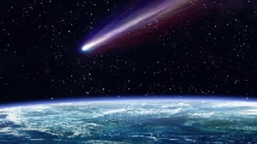
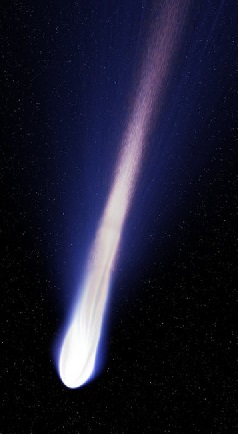

Това са малки космически тела, съставени от газ, прах и лед. Те се движат около Слънцето в силно удължени
елиптични орбити. Някои комети приближават Слънцето много рядко – веднъж на хиляди или дори милиони
години. Други по-често – на всеки няколко години.
Кометата се състои от твърдо ядро, образувано от замразени газове и твърди скални частици. Когато някоя комета доближи Слънцето, част от леда се изпарява и частиците от прах и газ се разхвърчават около кометата. Така се образува опашката й. Нейните размери понякога са огромни – колкото разстоянието от Земята до Слънцето. Но за сметка на това плътността на веществото в опашката е нищожна. Интересно е, че опашката на кометата винаги сочи в посока, противоположна на Слънцето, без значение дали се доближава или отдалечава от него.
Учените отдавна обсъждат въпроса как и къде са се образували кометите. Затова има много теории.
Две от по-интересните са, че кометите са родени от мистериозна експлодирала планета, която се е
движела между орбитите на Марс и Юпитер. Другата теория е, че кометите се образуват от материали,
които се изхвърлят в Космоса от вулканите. Но най-актуалната и според учените най-вероятната теория
е тази, че кометите произхождат от облака на Оорт. Това е сфера от разредено вещество, обгръщаща
Слънцето на много голямо разстояние далеч извън орбитата на най-отдалечената планета от Слънчевата
система. Според науката кометите не са заплаха. Те са безвредни и безмълвно преминават около нашата
планета. Но има ли възможност комета да се сблъска със Земята? Да, такава вероятност има. Учените
са изчислили, че вероятността това да се случи е веднъж на 80 милиона години.
Комети достатъчно ярки за да бъдат наблюдавани с невъоръжено око се появяват средно веднъж на десет
години и често добиват обществена известност. Такива комети биват наричани велики комети. В миналото
явленията на кометите са предизвиквали повсемерна паника като например преминаването на Земята през
опашката на Халеевата комета през 1910 г. Вестниците разпространяват твърдения, че в газовете на
опашката се съдържа отровното вещество цианген. За повечето съвременни наблюдатели, обаче, кометите
не са нищо повече от зрелищни небесни явления. Предсказването на яркостта на дадена комета е трудно
поради наличието на множество влияещи фактори като масата и активността на ядрото ѝ, разстоянието до
Слънцето и положението на Земята по време на перихелия на кометата. За кометата Кохутек през 1973 г.
се е очаквало да бъде ярка, противно на последвалите наблюдения. За сметка на това кометата Уест
през 1975 г. надминава значително очакванията за яркост. Следващите две велики комети са кометата
Хайкутаке от 1996 г. и кометата Хейл-Боп от 1997 г. Към май 2005 г. няма наблюдавани велики комети
в рамките на 21 век.
Комети достатъчно ярки за да бъдат наблюдавани с невъоръжено око се появяват средно веднъж на десет
години и често добиват обществена известност. Такива комети биват наричани велики комети. В миналото
явленията на кометите са предизвиквали повсемерна паника като например преминаването на Земята през
опашката на Халеевата комета през 1910 г. Вестниците разпространяват твърдения, че в газовете на
опашката се съдържа отровното вещество цианген. За повечето съвременни наблюдатели, обаче, кометите
не са нищо повече от зрелищни небесни явления. Предсказването на яркостта на дадена комета е трудно
поради наличието на множество влияещи фактори като масата и активността на ядрото ѝ, разстоянието до
Слънцето и положението на Земята по време на перихелия на кометата. За кометата Кохутек през 1973 г.
се е очаквало да бъде ярка, противно на последвалите наблюдения. За сметка на това кометата Уест
през 1975 г. надминава значително очакванията за яркост. Следващите две велики комети са кометата
Хайкутаке от 1996 г. и кометата Хейл-Боп от 1997 г. Към май 2005 г. няма наблюдавани велики комети
в рамките на 21 век.